Probabilidad y estadística Presentacion sobre los Cambios Clímaticos Bienvenidos a nuestra presentacion acerca del trabajo referente al primer bimestre. Aquí abordamos el trabajo realizado con respecto al proyecto de probabilidad y estadistica en el cual en base a los datos obtenidos y presentados en el blog los analizamos para identificar patrones y tendencias, e interpretamos los resultados para responder preguntas clave en base al proyecto realizado. 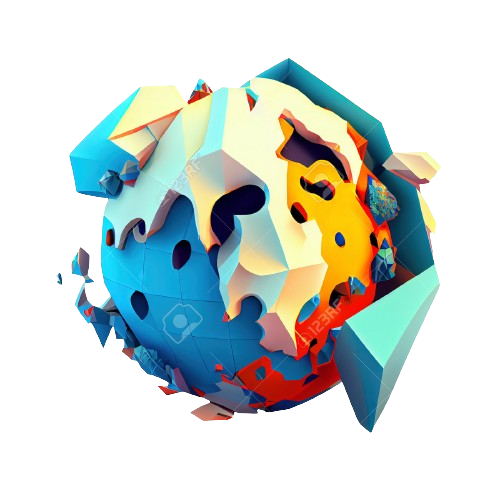 Recopilación de Datos Análisis de Datos Objetivo Presiona click en cada botón para desplegar la información × Recopilación de Datos Reunir temperaturas, precipitaciones, viento y humedad de estaciones meteorológicas, satélites y sensores. × Análisis de Datos Realizar cálculos estadísticos para identificar patrones y tendencias, como el análisis de regresión para cambios en temperaturas. × Objetivo Realizar un análisis estadístico del clima en Ambato para identificar patrones y tendencias. Esto ayudará a comprender los cambios climáticos y su impacto, correlacionando con factores ambientales y socioeconómicos para ofrecer una visión integral del clima y su influencia. Conceptos Básicos Nuestro objetivo es revelar los secretos ocultos en los números y ofrecer una comprensión más profunda del mundo. ¡Únete a esta aventura estadística! Tabla de Frecuencias Click para mas Informacion 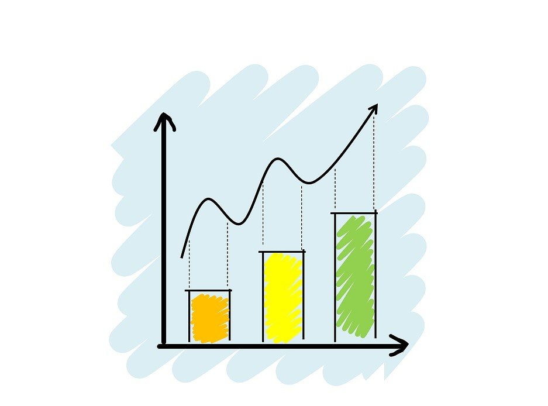 Frecuencias Absolutas Click para mas Informacion 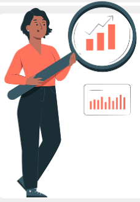 Frecuencias Relativas Click para mas Informacion × Tabla de Frecuencias En el campo de la estadística, la tabla de frecuencias es una herramienta estadística que muestra cuántas veces aparece cada valor en un conjunto de datos, permitiendo visualizar la distribución de las características de las variables estudiadas. 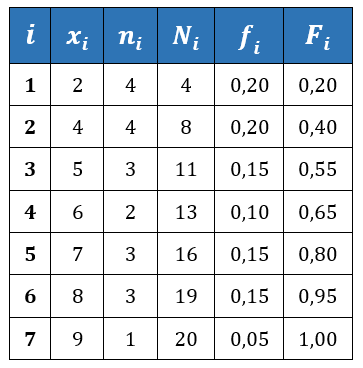 × Frecuencias Absolutas Las frecuencias absolutas son números que indican cuántas veces aparece una categoría específica de una variable en un conjunto de datos. × Frecuencias Relativas Las frecuencias relativas representan la proporción de veces que una categoría específica aparece en relación con el total de casos en un conjunto de datos. Estas frecuencias se expresan generalmente como porcentajes. Medidas de Posicion Las Medidas de Posición son herramientas estadísticas que resumen un conjunto de datos en un valor representativo o dividen la distribución de los datos en segmentos iguales. 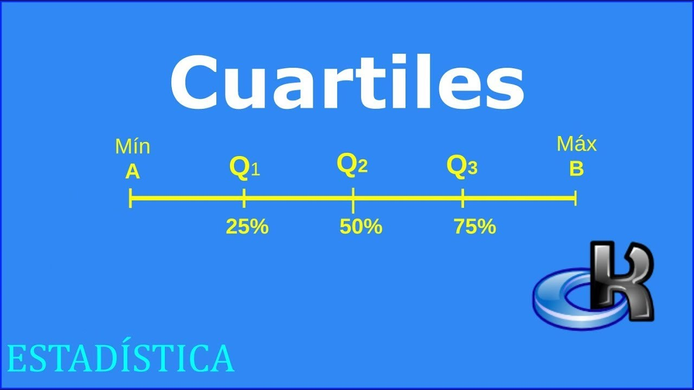 Cuartil Un cuartil es una medida estadística que divide una distribución de datos en cuatro partes iguales. 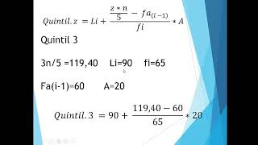 Quintil Un quintil divide la distribución de datos en cinco partes iguales, generando cuatro segmentos de igual tamaño. 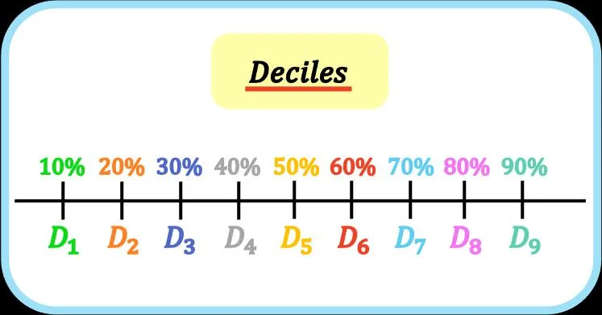 Decil El decil divide los datos en diez partes iguales, donde D5 (quinto quintil) representa la mediana. 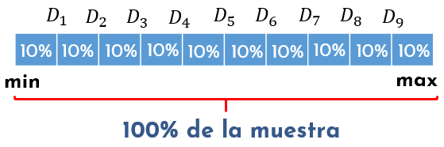 Percentil El percentil divide la distribución en cien partes iguales, generando 99 percentiles que se corresponden con los deciles y cuartiles. 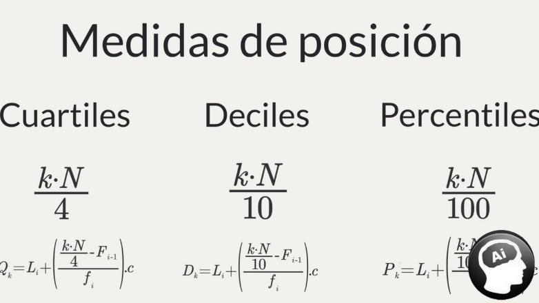 Formulas Para mas informacion sobre Formulas y las medidas de posicion haz click en ver mas y te dirigira a una web diferente Medidas de dispersion y centralizacion 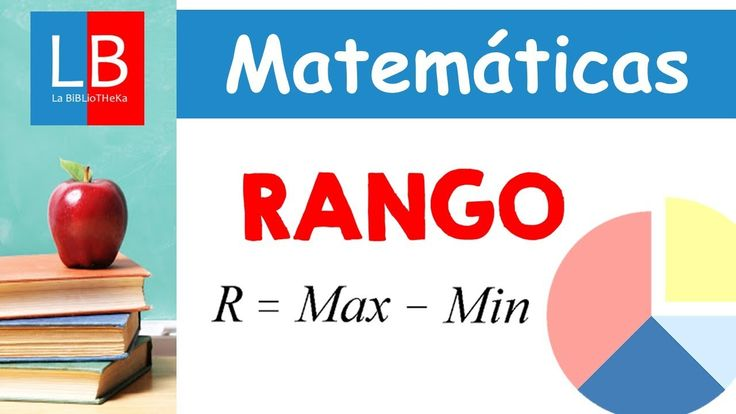 Rango o Amplitud Es la diferencia entre el valor más alto y el más bajo en un conjunto de datos. 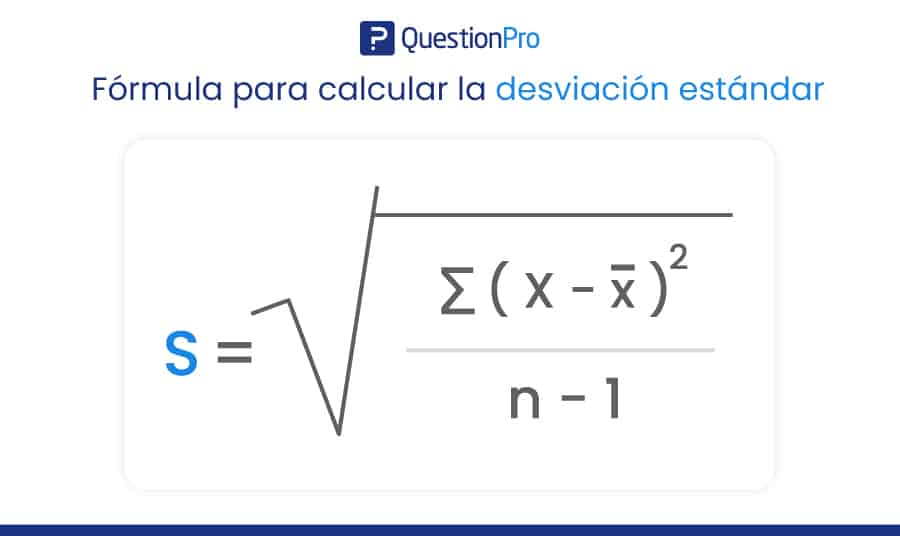 Desviacion Estandar Indica cuánto se alejan los valores en un conjunto de datos de la media (el valor promedio). Siempre es mayor o igual que cero. 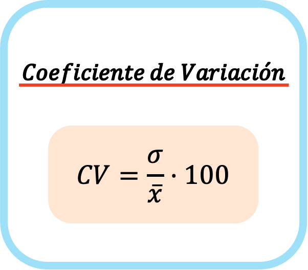 Coeficiente de Variacion Es una medida estadística que proporciona información sobre la dispersión relativa de un conjunto de datos. 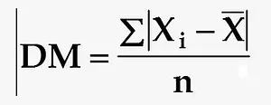 Desviacion Media Se usa para entender cuánto se desvían los datos de un conjunto del promedio. 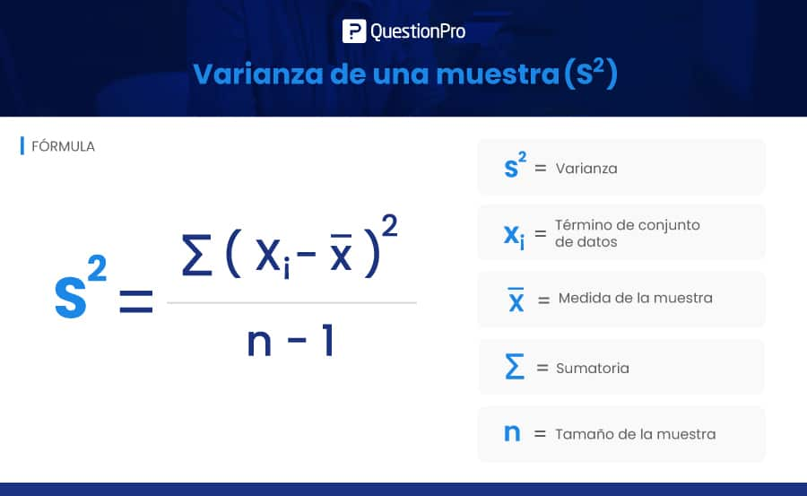 Varianza Representa la variabilidad de un conjunto de datos en relación a su media. Medidas de centralización Estas son indicadores que señalan los valores más característicos dentro de un conjunto de datos. 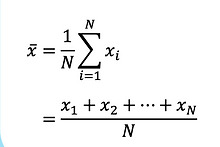 Media aritmetica Este es un tipo de promedio que asigna igual peso a todos los valores en el conjunto. 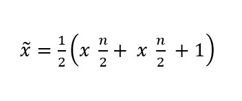 Mediana Esta medida divide un conjunto de valores en dos segmentos iguales 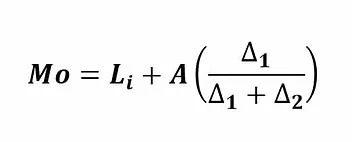 Moda Es el valor que se presenta con mayor frecuencia dentro de un conjunto de datos. Leer más Graficos Estadisticos Un gráfico estadístico es una representación visual de una serie de datos estadísticos. Graficos de Barras Los gráficos de barras resumen y comparan los datos categóricos mediante longitudes de barras proporcionales para representar valores. Los gráficos de barras se componen de un eje x y un eje y. El eje x representa categorías discretas que corresponden a una o varias barras. 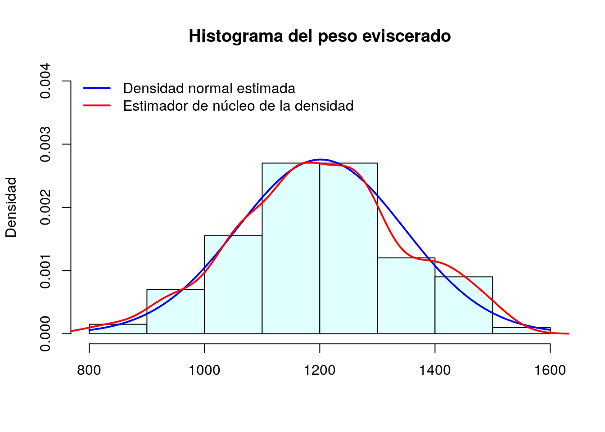 Histograma Los histogramas ayudan a ver el centro, la extensión y la forma de un conjunto de datos. También se pueden usar como herramienta visual para comprobar la normalidad. Los histogramas son una de las siete herramientas básicas de control de calidad estadístico. 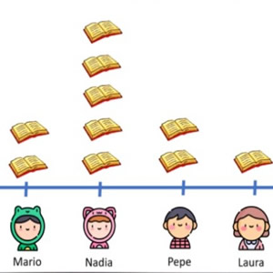 Pictograma Un pictograma es un símbolo gráfico que transmite información o datos mediante una representación clara y simplificada. Pueden ser un valioso complemento de presentaciones e infografías, ya que ayudan a transmitir información de forma visual y más rápida. 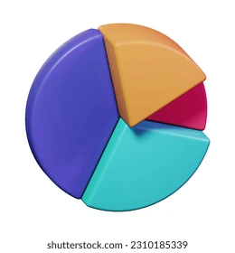 Circulas o de Pastel También conocida como gráfica circular, las gráficas de pastel son diagramas redondos, parecidos a un pastel. Cada una de las “porciones” representa una categoría de información que forma parte de un todo. En conjunto, todo el pastel representa el 100%. El tamaño de cada “porción” es relativo a su relación con el todo. 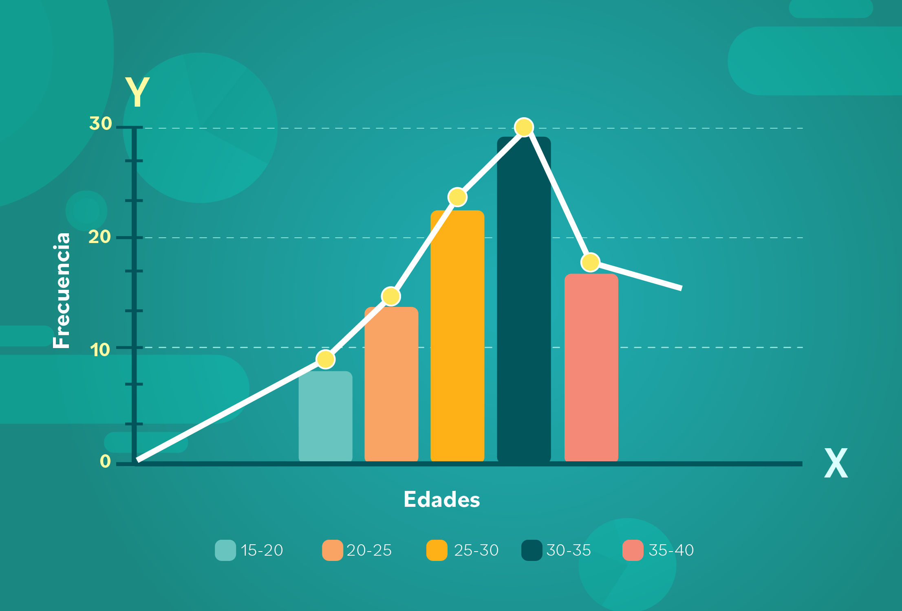 Poligono de Frecuencias Un polígono de frecuencias es un gráfico usado en estadística para mostrar la frecuencia con la que cambia una variable o categoría. Para crear uno necesitas un histograma de datos. 1 2 3 ... Medidas de Forma El objetivo de estas medidas es determinar si las probabilidades se distribuyen de manera equitativa alrededor de la media y si dicha distribución muestra un comportamiento parecido a la distribución de probabilidad más relevante, conocida como ‘distribución Normal’. Coeficiente de asimetría Se refiere a cómo la curva formada por los valores de una serie es simétrica a ambos lados de un valor central, que es la media aritmética. 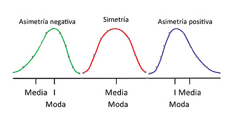 Coeficiente de apuntamiento Es una medida estadística que indica el grado de concentración de los valores de una variable alrededor de su media. 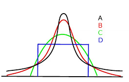 Objetivo de Analisis Analizar las características meteorológicas de una semana específica para comprender los patrones y tendencias en humedad, presión, condiciones climáticas, velocidad del viento, punto de rocío y temperatura. Objetivos Especificos Para analizar las características meteorológicas de una semana específica: Identificar días con alta humedad respecto a la media semanal. Evaluar días con presión atmosférica por encima de la mediana semanal. Determinar la condición climática menos común de la semana. Analizar la distribución de la velocidad del viento. Categorizar la frecuencia del viento más común. Examinar la distribución del punto de rocío. Comparar la dispersión de variables como temperatura, presión y velocidad del viento. Calcular medidas descriptivas (media, mediana, moda, rango, desviación estándar) de humedad y temperatura. Investigar la posible correlación entre temperatura y presión. Objetivos Aplicados 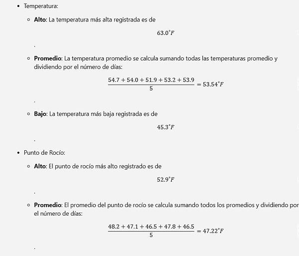 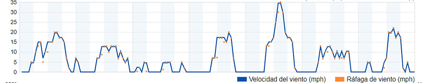 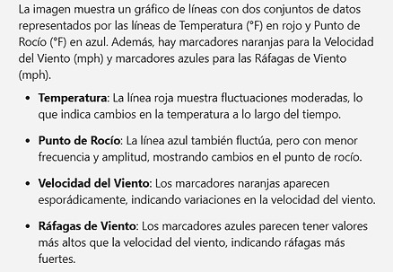 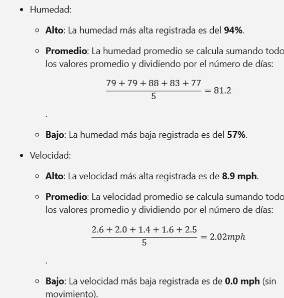 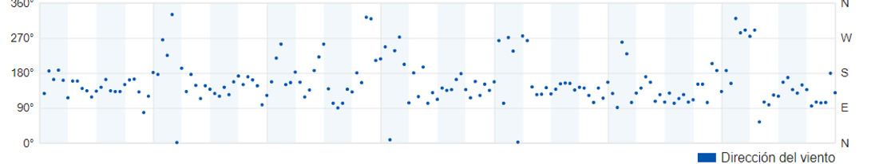 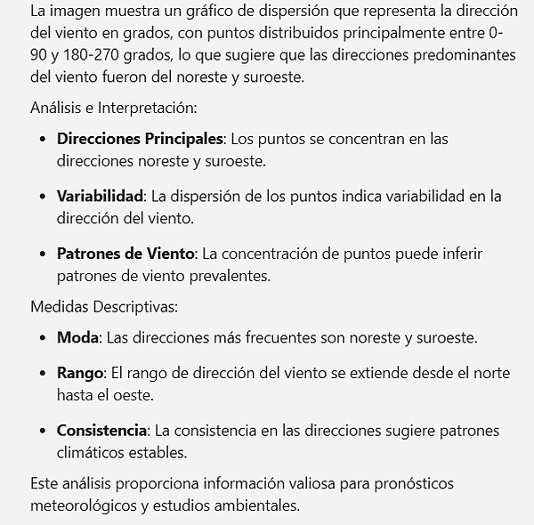 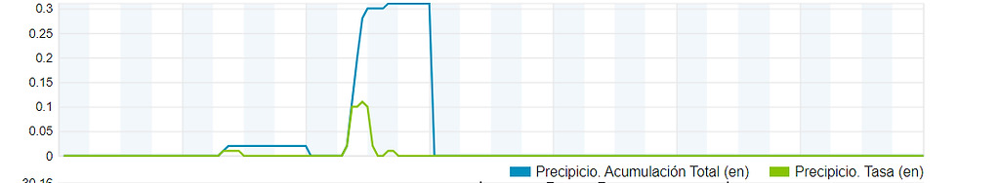 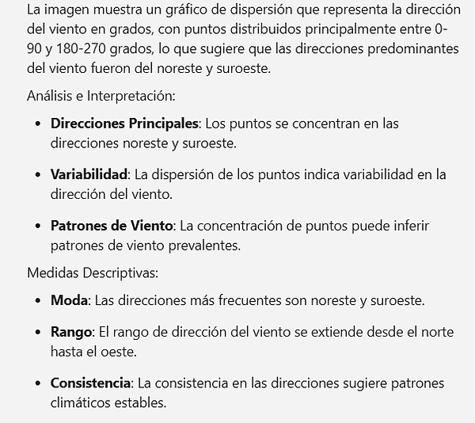 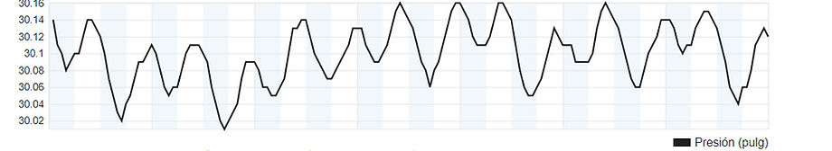 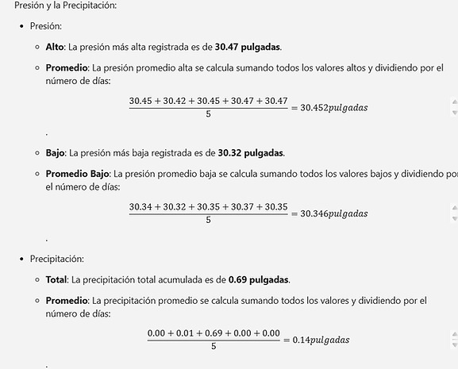 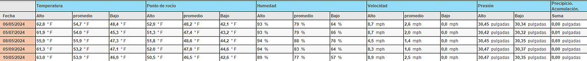 Abrir Preguntas × Información de la Semana 1. ¿Cuáles son los días que presentan una humedad superior a la humedad media de la semana? Humedad Superior a la Media: Los días con humedad superior a la media de la semana (80%) son: 6 de mayo: 79% 7 de mayo: 79% 8 de mayo: 76% 9 de mayo: 93% 10 de mayo: 89% 2. ¿Cuáles son los días con presión superior a la mediana de la presión de esa semana? Presión Superior a la Mediana: La mediana de la presión de la semana es de 30.35 pulgadas. Los días con presión superior a la mediana son: 6 de mayo: 30.45 pulgadas 9 de mayo: 30.47 pulgadas 10 de mayo: 30.47 pulgadas 3. ¿Cuál de las categorías de la variable Condición es la menos frecuente, en esa semana? La condición de lluvia es la menos frecuente en la semana. 4. ¿Cómo se distribuye la velocidad del viento en esa semana? Distribución de la Velocidad del Viento: La velocidad del viento varía a lo largo de la semana, con valores que van desde 0.0 mph hasta 8.9 mph. 5. Si se considera las categorías de la variable Viento, ¿cuál categoría es la más frecuente en esa semana? Considerando la categoría del viento, esta llega a ser la más frecuente en la semana. 6. ¿Cómo se distribuye la variable Punto de rocío? Distribución del Punto de Rocío: El punto de rocío varía a lo largo de la semana, con valores que van desde 40.1°F hasta 52.9°F. 7. ¿Cuál de las variables: Temperatura, Presión y Velocidad del viento, presenta menor dispersión? Menor Dispersión: Basado en los rangos observados, la Presión parece tener la menor dispersión, con valores que varían ligeramente alrededor de 30.35 a 30.47 pulgadas. 8. ¿Cuáles son las medidas descriptivas de la variable Humedad? Interprete Medidas Descriptivas de la Humedad: Alto: 94% Promedio: 80% Bajo: 47% La humedad promedio es alta, lo que indica una semana relativamente húmeda. 9. ¿Cuáles son las medidas descriptivas de la variable Temperatura? Interprete Medidas Descriptivas de la Temperatura: Alto: 66.9°F Promedio: 53.5°F Bajo: 43.9°F La temperatura promedio sugiere condiciones templadas durante la semana. 10. ¿Existe una relación entre la variable Temperatura y Presión? No existe una relación entre las condiciones de temperatura y presión ya que la presión se mantiene constante durante la semana mientras que la temperatura posee diversas variaciones. Preguntas sobre Cambio Climático ¿Cómo varían las temperaturas anuales por región? + Las temperaturas anuales varían significativamente por región debido a factores como la latitud, altitud, y la proximidad al océano. En general, las regiones cercanas al ecuador tienden a ser + cálidas, mientras que las regiones polares son mucho + frías. ¿Cómo se correlacionan precipitaciones con fenómenos globales? + Las precipitaciones están estrechamente correlacionadas con fenómenos globales como El Niño y La Niña, que afectan los patrones climáticos en todo el mundo. Estos fenómenos pueden causar sequías en algunas áreas y lluvias intensas en otras. ¿Efectos del cambio climático en temperaturas y precipitaciones? + El cambio climático está provocando un aumento en las temperaturas globales y alterando los patrones de precipitación. Algunas regiones están experimentando lluvias + intensas y frecuentes, mientras que otras están viendo una disminución en las precipitaciones, lo que lleva a sequías. ¿Patrones estacionales en diferentes áreas? + Los patrones estacionales varían considerablemente entre diferentes áreas. En general, las áreas templadas experimentan cuatro estaciones distintas, mientras que las áreas tropicales pueden tener estaciones húmedas y secas. El cambio climático también está alterando estos patrones, haciendo que las estaciones sean menos predecibles. ¿Frecuencia y cambios en eventos climáticos extremos? + La frecuencia y la intensidad de los eventos climáticos extremos, como huracanes, olas de calor e inundaciones, están aumentando debido al cambio climático. Estos eventos tienen impactos significativos en las comunidades y los ecosistemas. ¿Impacto de microclimas locales? + Los microclimas locales, influenciados por factores como la vegetación, la topografía y la urbanización, pueden tener un impacto significativo en las condiciones climáticas locales. Estos microclimas pueden diferir significativamente del clima regional general.